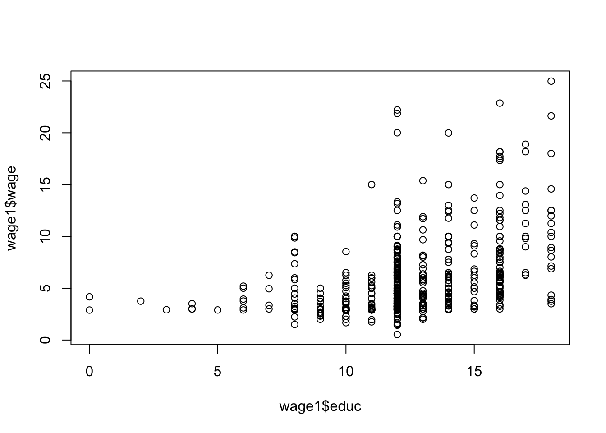
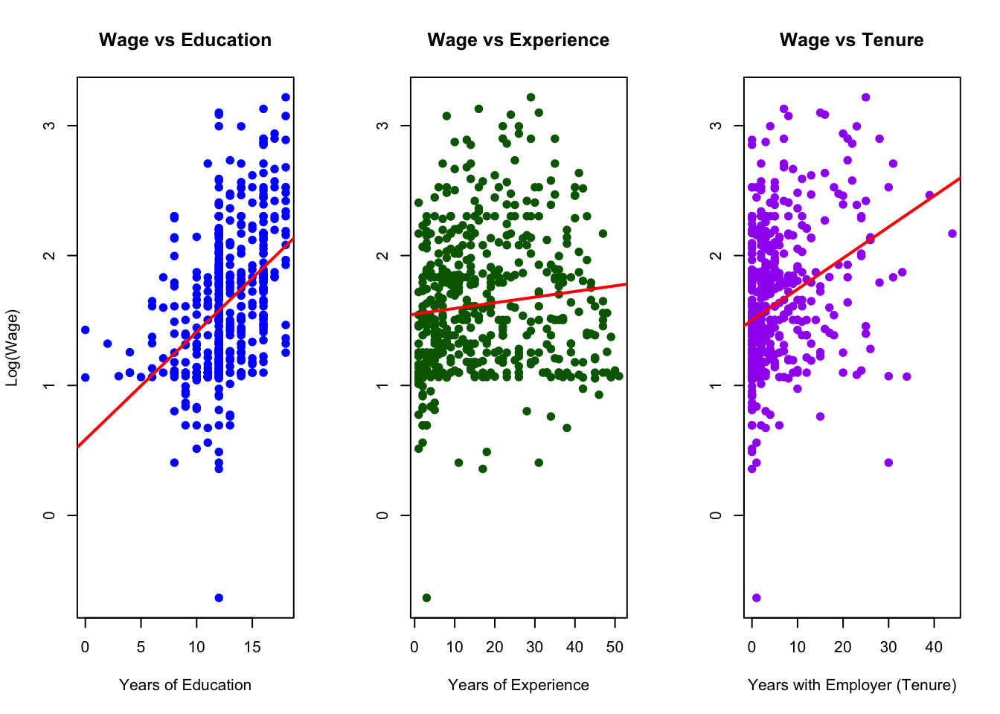
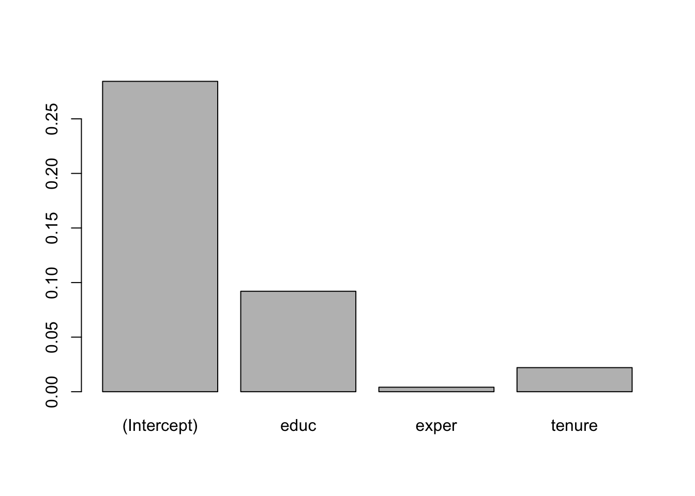

#install.packages("wooldridge")
library(wooldridge)Warning: package 'wooldridge' was built under R version 4.3.3In this course, we begin each topic by reviewing the latest best practices for each method. While reading about how to estimate the value of nature is important, applying these methods in practice is equally essential. Throughout the course, we will periodically incorporate hands-on examples that demonstrate how to carry out these estimation techniques using real data.
A simple regression model is
\[y=\beta_0+\beta_1x+u\]
\(y\) is the dependent variable, the one we want to explain or predict \(x\) is independent variable (regressor), the one we use to explain or predict \(y\) \(u\) is error term representing unobserved other factors that affect y \(β_0\) is intercept term (constant term) \(β_1\) is slope coefficient.
We will cover a basic example which reproduces a well known finding in Introductory Econometrics: A Modern Approach, 7e by Jeffrey M. Wooldridge. This famous example is of the wage pay gap. This is a finding that is more of interest to more broader economics as a field than our focus of valuing nature. However, I find this is really helpful to illustrate the power of regression analysis and what the regression is telling us.
Each example illustrates how to load data, build econometric models, and compute estimates with R.
Lets Begin Install and load the wooldridge package and lets get started!
#install.packages("wooldridge")
library(wooldridge)Warning: package 'wooldridge' was built under R version 4.3.3Load the wage1 data and check out the documentation.
data("wage1")
?wage1The documentation indicates these are data from the 1976 Current Population Survey, collected by Henry Farber when he and Wooldridge were colleagues at MIT in 1988.
educ: years of education
wage: average hourly earnings
lwage: log of the average hourly earnings
First, make a scatter-plot of the two variables and look for possible patterns in the relationship between them.
plot(wage1$educ, wage1$wage)
It appears that on average, more years of education, leads to higher wages.
First lets look at how education impacts wages.
summary(lm(wage ~ educ, data = wage1))
Call:
lm(formula = wage ~ educ, data = wage1)
Residuals:
Min 1Q Median 3Q Max
-5.3396 -2.1501 -0.9674 1.1921 16.6085
Coefficients:
Estimate Std. Error t value Pr(>|t|)
(Intercept) -0.90485 0.68497 -1.321 0.187
educ 0.54136 0.05325 10.167 <2e-16 ***
---
Signif. codes: 0 '***' 0.001 '**' 0.01 '*' 0.05 '.' 0.1 ' ' 1
Residual standard error: 3.378 on 524 degrees of freedom
Multiple R-squared: 0.1648, Adjusted R-squared: 0.1632
F-statistic: 103.4 on 1 and 524 DF, p-value: < 2.2e-16This example shows use the direct level of changes in wages. Interpret the coefficient. The issue that can arise with using the level of wages is that this data set corresponds to data from the ~50 years ago. Inflation has occurred, wages have gone up. It would be more appropriate to look the percentage change in wages based on the level of education.
The example in the text is interested in the return to another year of education, or what the percentage change in wages one might expect for each additional year of education. To do so, one must use the log(wage). This has already been computed in the data set and is defined as lwage.
Build a linear model to estimate the relationship between the log of wage (lwage) and education (educ).
\[\hat{log(wage)}=𝛽_0+𝛽_1𝑒𝑑𝑢𝑐\]
log_wage_model <- lm(lwage ~ educ, data = wage1)Print the summary of the results.
summary(log_wage_model)
Call:
lm(formula = lwage ~ educ, data = wage1)
Residuals:
Min 1Q Median 3Q Max
-2.21158 -0.36393 -0.07263 0.29712 1.52339
Coefficients:
Estimate Std. Error t value Pr(>|t|)
(Intercept) 0.583773 0.097336 5.998 3.74e-09 ***
educ 0.082744 0.007567 10.935 < 2e-16 ***
---
Signif. codes: 0 '***' 0.001 '**' 0.01 '*' 0.05 '.' 0.1 ' ' 1
Residual standard error: 0.4801 on 524 degrees of freedom
Multiple R-squared: 0.1858, Adjusted R-squared: 0.1843
F-statistic: 119.6 on 1 and 524 DF, p-value: < 2.2e-16Check the documentation for variable information
Interpret the coefficient. What does
?wage1lwage: log of the average hourly earnings
educ: years of education
exper: years of potential experience
tenure: years with current employer
Plot the variables against lwage and compare their distributions and slope (𝛽) of the simple regression lines.
# Set up 3 plots in one row
par(mfrow = c(1, 3))
# 1. Wage vs Education
plot(wage1$educ, wage1$lwage,
main = "Wage vs Education",
xlab = "Years of Education",
ylab = "Log(Wage)",
pch = 19, col = "blue")
abline(lm(lwage ~ educ, data = wage1), col = "red", lwd = 2)
# 2. Wage vs Experience
plot(wage1$exper, wage1$lwage,
main = "Wage vs Experience",
xlab = "Years of Experience",
ylab = "", # omit y-axis label to avoid clutter
pch = 19, col = "darkgreen")
abline(lm(lwage ~ exper, data = wage1), col = "red", lwd = 2)
# 3. Wage vs Tenure
plot(wage1$tenure, wage1$lwage,
main = "Wage vs Tenure",
xlab = "Years with Employer (Tenure)",
ylab = "", # omit y-axis label to avoid clutter
pch = 19, col = "purple")
abline(lm(lwage ~ tenure, data = wage1), col = "red", lwd = 2)
# Reset plotting layout back to 1 plot
par(mfrow = c(1, 1))Estimate the model regressing educ, exper, and tenure against log(wage).
\[\hat{log(wage)}=\beta_0+\beta_1educ+\beta_3exper+\beta_4tenure\]
hourly_wage_model <- lm(lwage ~ educ + exper + tenure, data = wage1)Plot the coefficients, representing percentage impact of each variable on log(wage) for a quick comparison.
coefficients(hourly_wage_model)(Intercept) educ exper tenure
0.284359541 0.092028988 0.004121109 0.022067218 Print the estimated model coefficients:
barplot(coefficients(hourly_wage_model))